Feel your surroundings beyond sight and sound.
A biomimetic haptic wearable that listens like a bat and speaks through the skin, turning ultrasonic echoes into vibration so visually impaired pedestrians can feel obstacles before they reach them.
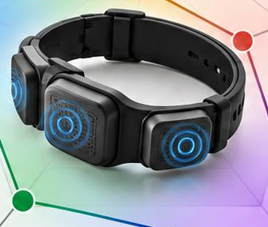
For a visually impaired pedestrian, one sense is deprived and another is overloaded. Hearing must track traffic, crowds and navigation prompts while the cane reaches only the ground, about one cane-length ahead.
people live with a near or distance vision impairment (WHO, World Report on Vision, 2019).
Nothing carries how far away an obstacle is beyond cane reach without also occupying hearing. The skin, a silent and always-available channel, is left unused.
Visually impaired urban pedestrians need a way to detect obstacles and judge distance early in crowded, noisy streets, but are held back by sensory deprivation of sight and an overloaded sense of hearing.
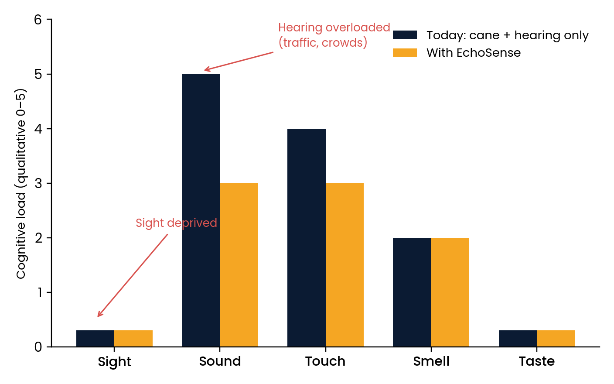
Bats navigate in darkness by timing the echoes of ultrasonic calls. EchoSense does the same with a 40 kHz sensor and returns the result as touch.
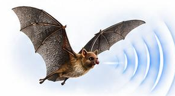
Bats emit ultrasonic calls and read the echoes.
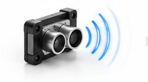
An HC-SR04 sensor times the returning echo.
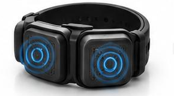
Distance becomes vibration patterns on the wrist.
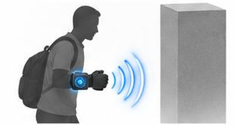
The user feels proximity without eyes or ears.
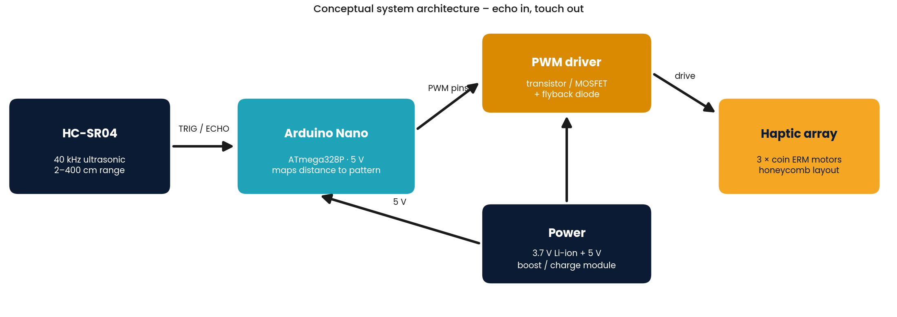
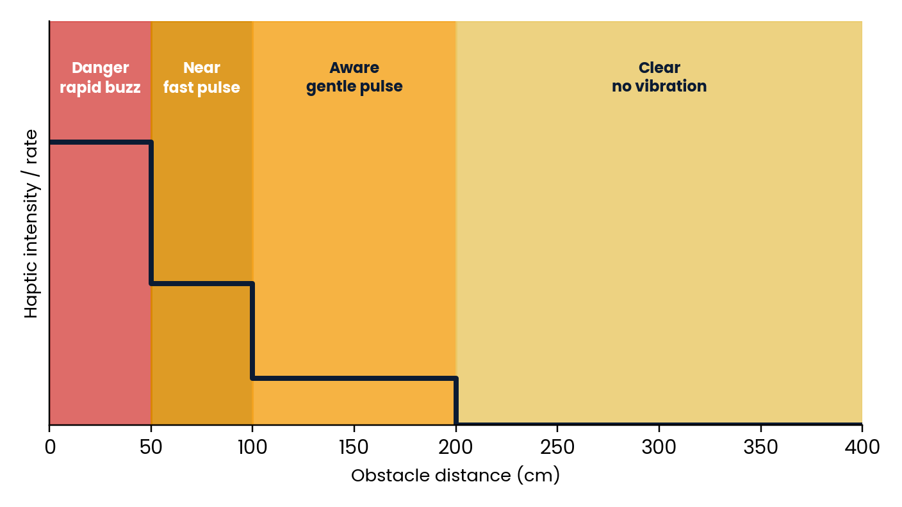
d = (v × t) / 2, with v ≈ 343 m/s. An echo after 5.8 ms means an obstacle about one metre away. The honeycomb layout of the motors is a second nod to nature, from Apis mellifera.
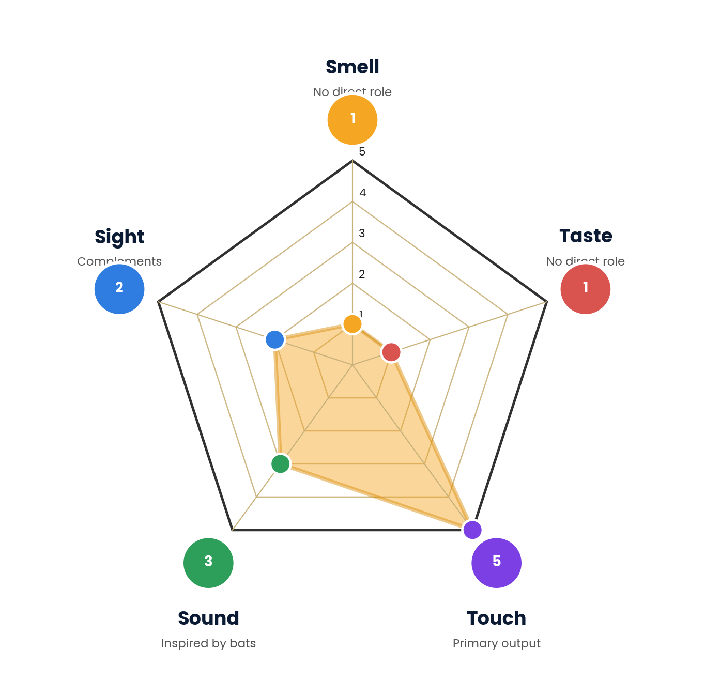
| Sense | Role |
|---|---|
| Touch 5/5 | Primary output: distance as vibration on the skin. |
| Sound 3/5 | Inspired by bats; ultrasonic and inaudible, so hearing stays free. |
| Sight 2/5 | Complements; never required. |
| Smell 1/5 | No direct role; natural landmarks stay clean. |
| Taste 1/5 | No direct role. |
Autodesk Fusion 360 models and photos of the low-fidelity mood box (3D-printed shell, neoprene strap).
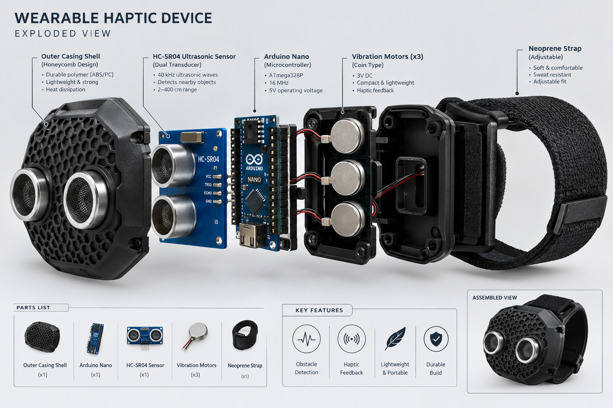
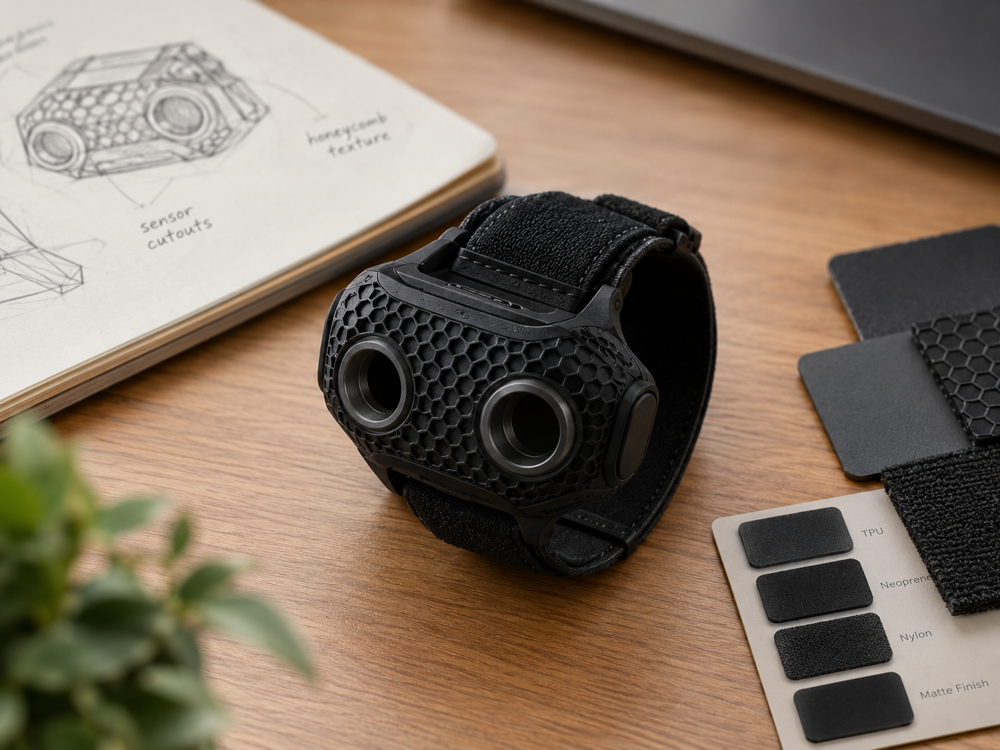
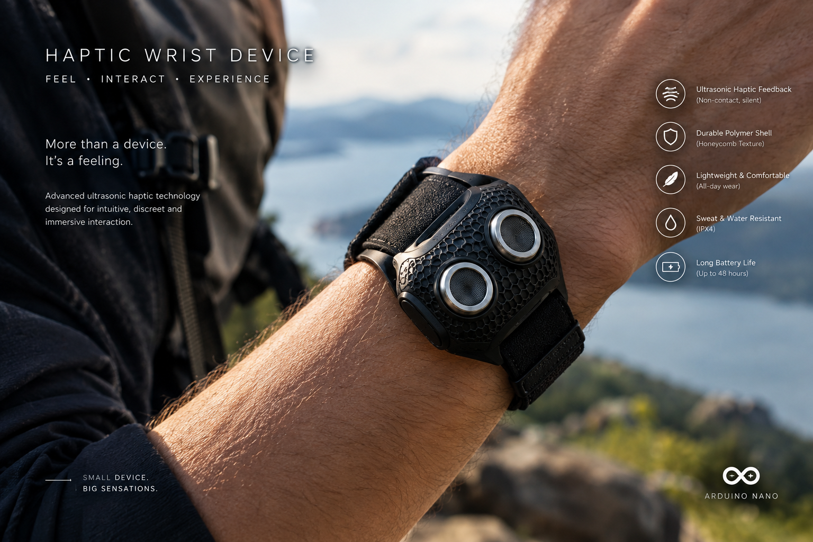
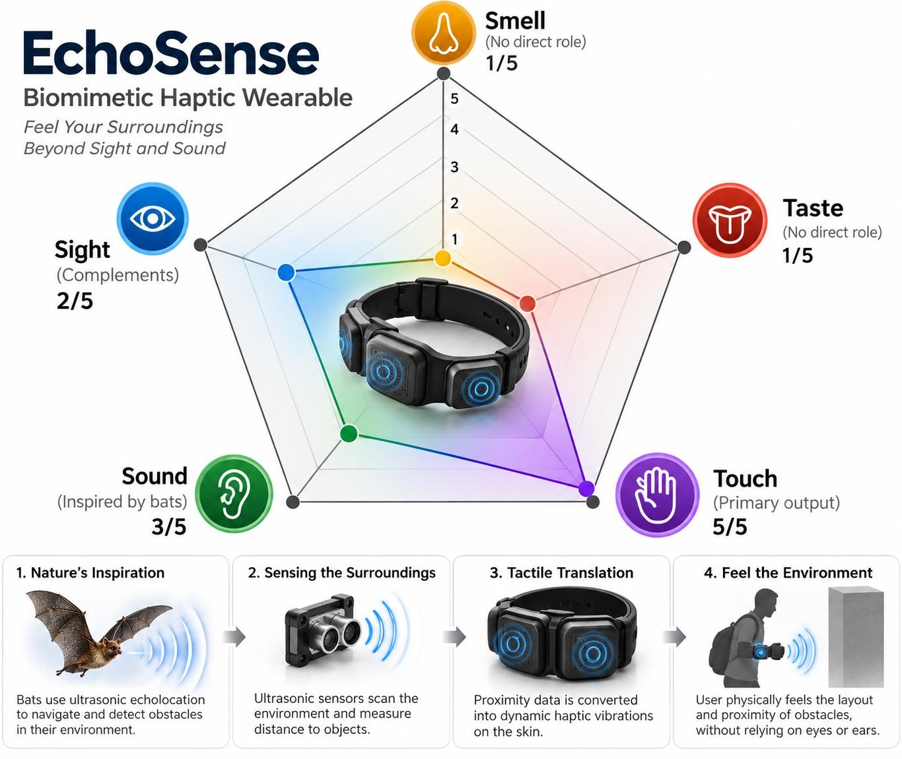
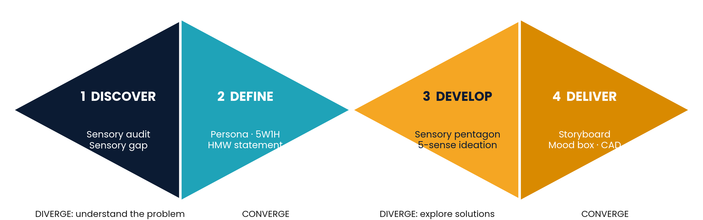
Sensory audit of a busy street, sensitivities, the Sensory Gap.
Persona, 5W1H, the sensory problem statement and HMW.
Sensory pentagon and five-sense brainstorming.
Storyboard, mood box, sensory-harmony test, CAD.